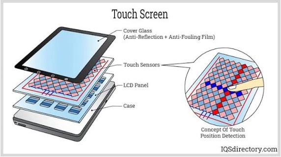
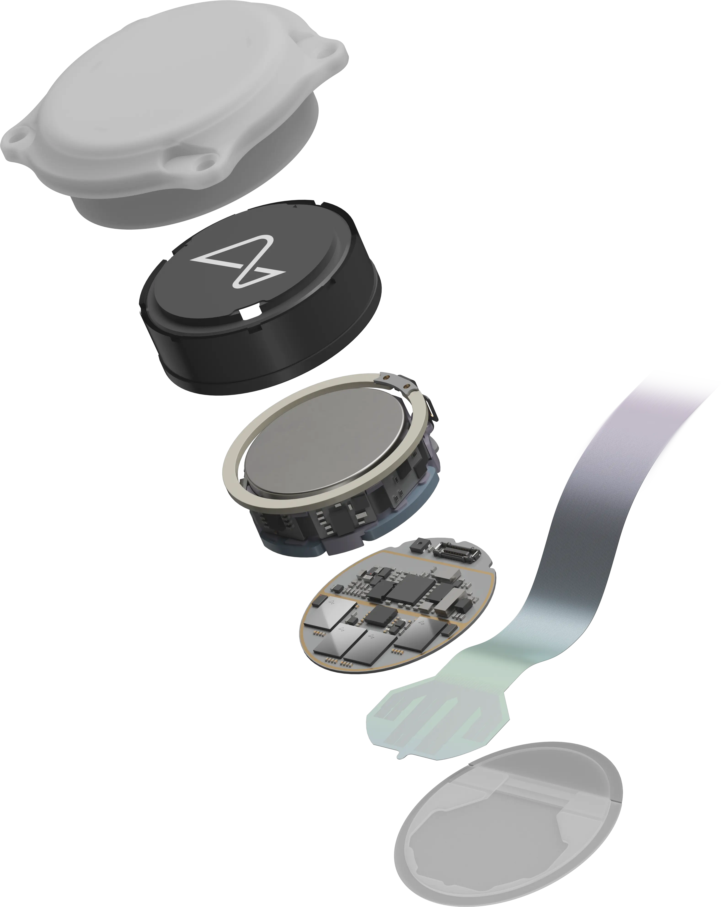

In the 21st century, input devices have evolved past physical buttons and mice into capacitive touchscreens, biological identifiers, and spatial computing.

- Capacitive Touch and Mobile Computing (2000s)
- Multi-Touch Technology: Popularized massively by the iPhone in 2007, capacitive screens detect electrical changes from human skin, enabling pinch-to-zoom, swiping, and fluid multi-finger gestures.
- Biometrics and Motion Tracking (2010s)
- Fingerprint and Facial Recognition: Security shifted from typed passwords to biometric sensors (Touch ID, Face ID), turning our own physical bodies into direct input credentials.
- Spatial and Gesture Sensors: Devices like Microsoft Kinect and modern VR controllers track 3D body and hand movements in real time.
- The Cutting Edge: Brain-Computer Interfaces (BCIs)
- Neural Inputs: Experimental companies like Neuralink are developing invasive and non-invasive brain-computer interfaces that allow paralyzed patients to control digital cursors and UI elements using thoughts alone.


Sources
- Article by Neuralink. link to the article
- Article by WikiPedia. link to the article
- Article by WikiPedia. link to the article
- Article by WikiPedia. link to the article